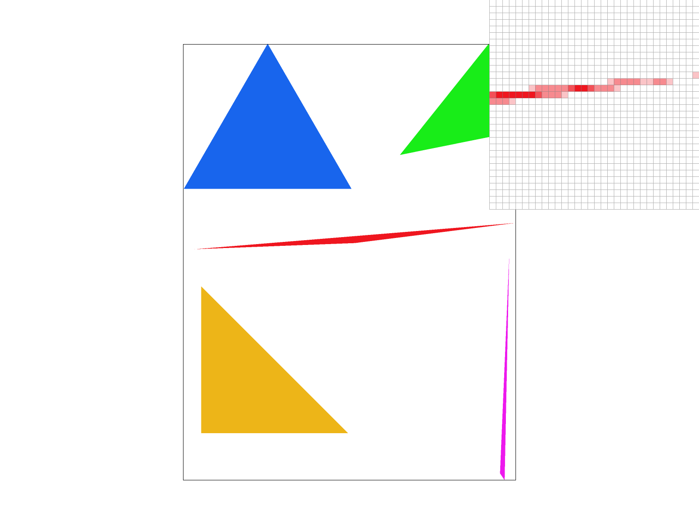
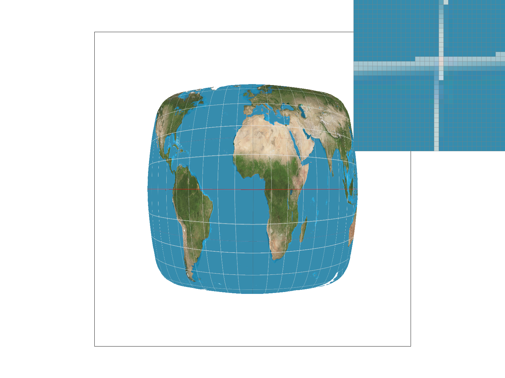
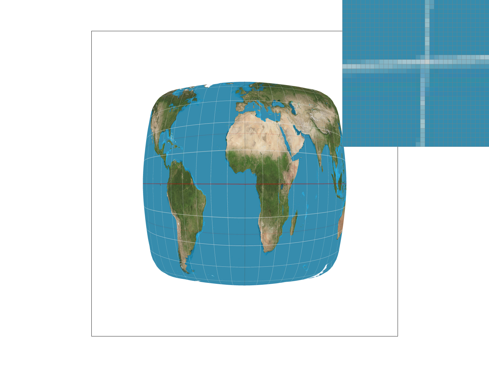
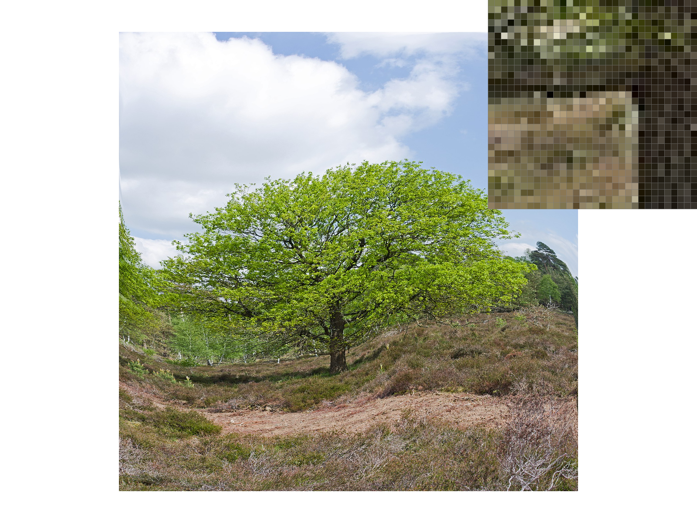
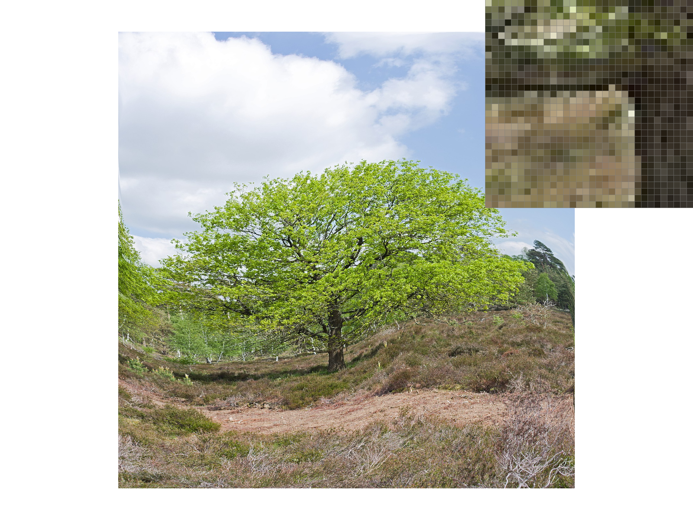
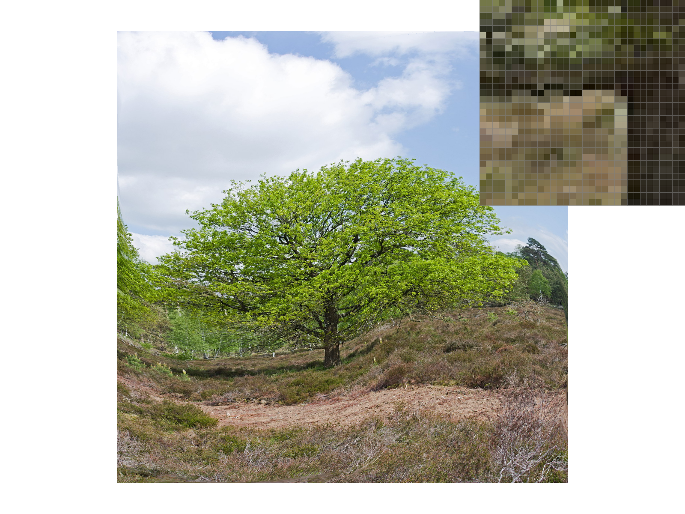
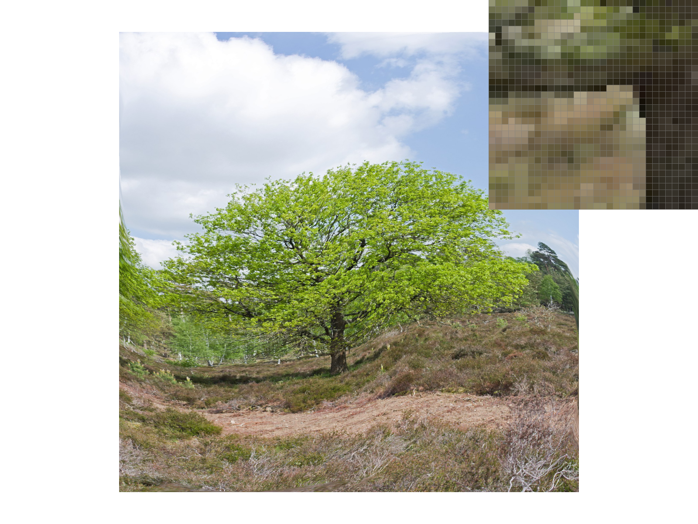

Overview
Give a high-level overview of what you implemented in this project. Think about what you've built as a whole. Share your thoughts on what interesting things you've learned from completing the project.
This project has two primary focuses: To draw triangles in increasingly complicated ways (parts 1, 3, 4, and 5), and to improve the quality of those triangles when they are drawn on the screen (parts 2 and 6).
To rasterize svg files to the screen, we first need to be able to draw the triangles that make up those files. We start with single-color triangles, where we are given the vertices of a triangle and the color to fill and we write that color to every point within the bounds of the triangle. Next, we can reshape those triangles using a handful of matrix transforms. If we want to draw triangles with more complex contents, we have two tools: barycentric color and texture-sampled color. With barycentric color, we define the color at the corners of the triangle and interpolate the colors within the triangle as a function of their distance from the corners.
Sampling pixels from a texture is a little more involved because the dimensions of a triangle within the texture do not necessarily align with the dimensions that will actually be drawn to the frame buffer. To translate between the two, we return to barycentric coordinates: We find the (alpha, beta, gamma) of the point in (x, y) space (screen-space) and use them to find the equivalent point in (u, v) space (texture-space). We finally sample a color from (u, v) in the texture and write it to (x, y) in the frame buffer.
We now must contend with the fact that, while an SVG file can store any triangle in perfect resolution, our computer monitors have a finite number of pixels that are arranged in a grid. Supersampling mitigates this issue by internally increasing the sample buffer's size, to store our rasterized image at a higher resolution than our monitors can actually display. When we shrink the sample buffer to the size of our frame buffer, we average out the pixels we are compressing. This turns a jagged black line into a gradient of greys that give the illusion of being perfectly straight.
With texture sampling, we also have the problem that we are wasting resources sampling full-resolution textures for triangles that do not make up a significant part of the frame buffer. We resolve this with level sampling using mipmaps. First, we store compressed versions of every texture at half resolution, quarter resolution, and so on. Next, we calculate the ratio of a triangle's size in texture-space to its size in screen-space. If the texture is significantly bigger than it needs to be in screen-space, we use one of its compressed variants instead. This increases memory consumption but increases the speed of the render. To obscure the transition between different mipmap levels, we can linearly interpolate between adjacent levels to hide the transition behind a gradient. These methods have the pleasant side effect of partial antialiasing since the process of generating downscaled versions of the texture is similar to supersampling from a larger sample buffer.
In completing this project, we have found that most of the work in drawing a triangle to the screen in a way that "looks right" is in obscuring the incompatibility of vectors and bitmaps. Supersampling influences the design of the entire project, and almost every part of the project after part 2 involved adapting our plans to this requirement in some way or another. Similarly, sampling pixels from textures was fairly easy but correctly implementing support for mipmap levels took considerably more time. It takes a lot of work to achieve the monumental goal of rendering a triangle in a way that elicits absolutely no reaction from the viewer, and for that we have gained a great appreciation for the people who have to do this for a living.
Section I: Rasterization
Part 1: Rasterizing single-color triangles
Walk through how you rasterize triangles in your own words.
We first find the range of coordinates we must consider for rasterization. To do this we sort the x and y coordinates of the points of the triangle. We iterate from the lowest x to the highest x, and from the lowest y to the highest y. For every point in this range, we check if it is inside the triangle we are drawing and then call rasterize_point if needed. To check if a point is inside the triangle, we use the three edges of the triangle as lines that each split the (x, y) plane in two. If the point is on the same side of all three lines, then it is inside the triangle.
Explain how your algorithm is no worse than one that checks each sample within the bounding box of the triangle.
We only consider points within the bounding box of the triangle (that is, only the x, y values that are possible given the coordinates of the triangle's vertexes) so we meet this performance specification.
Show a png screenshot of basic/test4.svg with the default viewing parameters and with the pixel inspector centered on an interesting part of the scene.
Part 2: Antialiasing triangles
Walk through your supersampling algorithm and data structures. Why is supersampling useful? What modifications did you make to the rasterization pipeline in the process? Explain how you used supersampling to antialias your triangles
Our sampling process involved a number of steps beginning with expanding the sample_buffer to a larger size to get a more detailed measurement of the triangles that we were rendering. Once we expanded the sample_buffer, we can calculate with more precision if a pixel will fall in a triangle. For example, if we could only measure in units of 1, we may now be able to measure with units of 0.5 if we were to make the sample rate 4 times of great. Then, in order to resolve the potentially greater number of pixels within the sample_buffer, we needed to take an average of the pixels within a square the size of the sample rate. Then, we need to average the red, green, and blue pixels and fill the pixel in the sample buffer with the value. Supersampling allow us to essentially take an average of pixels, which could brighten the color of a group of pixels that is on the border of a shape, which results in the appearance of fewer jaggies.
|
|

|

|
Explain why these results are observed.
These results are observed because, with supersampling, we can now make lines less noticeable by taking an average of pixels, which will make the image appear less "sharp," even though the actual pixels will remain as sharp.
Part 3: Transforms
Create an updated version of svg/transforms/robot.svg with cubeman doing something more interesting, like waving or running. Feel free to change his colors or proportions to suit your creativity.
Explain what you were trying to do with cubeman in words.
Physical exercise is an important part of a cubeman's healthy lifestyle, so this cubeman is doing a handstand split. We did this by applying a rotation transform to his arms and legs, and then by adjusting the translation transforms to account for the new positioning. Finally, we apply a rotation transform to his entire body to flip him upside-down. Wherever we apply a rotation transform where there was already a translation transform, we take care to apply the rotation first, as reversing the order will change the destination of the translation.
Section II: Sampling
Part 4: Barycentric coordinates
Explain barycentric coordinates in your own words and use an image to aid you in your explanation. One idea is to use a svg file that plots a single triangle with one red, one green, and one blue vertex, which should produce a smoothly blended color triangle.
Barycentric coordinates give a relative measurement of how far away a point is from the corners of a triangle. The three measures (alpha, beta, and gamma) represent each corner, and a value of 1.0 in any of them means the point is exactly on that corner. If the value does not sum to one, then the point is outside of the triangle.
If we look at the rightmost edge with (alpha, beta, gamma) labeled in counter-clockwise order, we can see a simple example of how this works: The center of this edge is (0.5, 0, 0.5) in barycentric coordinates, and as such its color is calculated as 0.5 * (1, 0, 0) + 0.0 * (0, 1, 0) + 0.5 * (0, 0, 1), producing purple.
Show a png screenshot of svg/basic/test7.svg with default viewing parameters and sample rate 1. If you make any additional images with color gradients, include them.

Part 5: "Pixel sampling" for texture mapping
Explain pixel sampling in your own words and describe how you implemented it to perform texture mapping. Briefly discuss the two different pixel sampling methods, nearest and bilinear.
Pixel sampling helps us deal with a key issue with implementing texture mapping: One (x, y) point in the screen space does not translate to one (x, y) point in the texture. This is especially true when we use mipmaps, where we use a reduced texture size for details that are less pronounced in the render.
We first convert our (x, y) point within the current triangle to a (u, v) point, which will make it easier to find the same point in a reduced-size version of the texture. Once we scale this point to the actual size of the texture, we sample a color using either nearest-neighbor or bilinear sampling.
With nearest-neighbor sampling, we simply round our scaled (u, v) point to the nearest integer point. With bilinear sampling, we consider the four points closest to our sample point. We then use linear interpolation to find a weighted average of the colors of these four points.
Check out the svg files in the svg/texmap/ directory. Use the pixel inspector to find a good example of where bilinear sampling clearly defeats nearest sampling. Show and compare four png screenshots using nearest sampling at 1 sample per pixel, nearest sampling at 16 samples per pixel, bilinear sampling at 1 sample per pixel, and bilinear sampling at 16 samples per pixel.
|
|

|
|

|

|
As these screenshots of texmap/test2.svg demonstrate, bilinear sampling with one sample per pixel produces a less choppy line than the equivalent image with nearest-neighbor sampling. Its output is similar to nearest-neighbor sampling with 16 samples per pixel, but it does not require greatly increasing the size of the sample buffer like that method does.
Comment on the relative differences. Discuss when there will be a large difference between the two methods and why.
Bilinear sampling clearly outperforms nearest sampling. Specifically, bilinear will show a much smoother transition of colors, while nearest sampling will appear “blocky,” especially when there is a stark contrast of colors. This is in part due to the fact that the nearest neighbor will have fewer points to interpolate; thus, producing a lower-quality image.
Part 6: "Level sampling" with mipmaps for texture mapping
Explain level sampling in your own words and describe how you implemented it for texture mapping.
Level sampling allows us to sample lower-resolution textures for less-important details in the image. We calculate levels as a function of the ratio of a pixel in (u, v) space to a pixel in (x, y) space. A higher level means we use a smaller version of the original texture.
At level zero, we use the uncompressed texture. With nearest-level sampling, we round the level we calculate to the nearest integer and use that level mipmap. With linear sampling, we consider levels i and i+1 and take a weighted sum of the two levels. For example, if we used linear sampling and get_level returns 4.5, we sample the color 0.5 * color_at_4 + 0.5 * color_at_5.
You can now adjust your sampling technique by selecting pixel sampling, level sampling, or the number of samples per pixel. Describe the tradeoffs between speed, memory usage, and antialiasing power between the three various techniques.
Compared to nearest-neighbor pixel sampling, bilinear pixel sampling provides antialiasing at the cost of more computation per pixel. Instead of just rounding to the nearest pixel in texture-space, we need to perform three linear interpolations (lerps) on the four nearest texture points.
Level-zero sampling requires the least memory since we always need to load the full-resolution texture no matter which method we use. In exchange, it is slower and provides no antialiasing. Nearest-level sampling and linear sampling both require 1.33 times the memory to store mipmaps for the texture, but are faster (we are sampling from smaller textures) and provide some antialiasing. Linear sampling provides the most antialiasing, but requires the most memory and the most computation (since we need to sample from two levels instead of one and lerp their color values).
Increasing samples per pixel tends to be the most costly way of improving the render, but it produces the best results in the widest range of conditions. To sample 4 times per pixel, for example, we need to double the height and the width of the sample buffer, increasing its memory usage by 4x. It also increases the processing needed in resolve_to_framebuffer, since we need to average the color between these 4 points to find the color we will write to the framebuffer. It is generally the best at eliminating "jaggies" on finer objects, because non-cardinal angles are now rendered as a gradient of colors that obscure the fact that they do not line up with the pixels on screen.
Using a png file you find yourself, show us four versions of the image, using the combinations of L_ZERO and P_NEAREST, L_ZERO and P_LINEAR, L_NEAREST and P_NEAREST, as well as L_NEAREST and P_LINEAR.
|

|

|
|

|

|
"Oak tree at Sallandse Heuvelrug National Park" by Wikimedia user Ymblanter